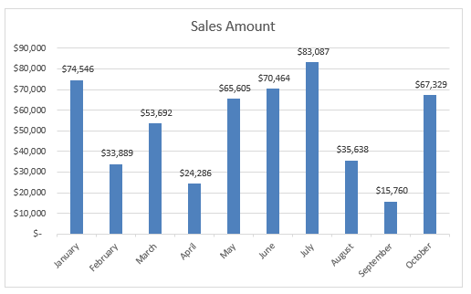

Visualisations
Average Hours_Booked by Suburb

Identifying peak usage times helps in managing supply and demand
more efficiently. The city can ensure availability during rush hours
and provide incentives for off-peak usage.
Average Hours_Booked by Suburb
Identifying peak usage times helps in managing supply and demand
more efficiently. The city can ensure availability during rush hours
and provide incentives for off-peak usage.